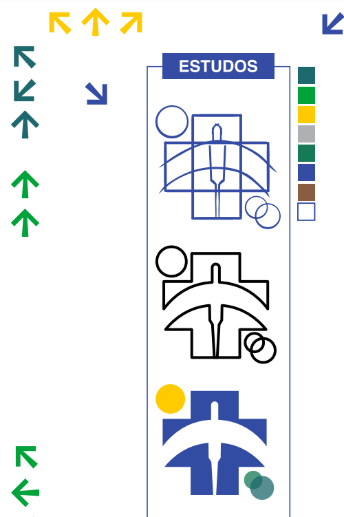
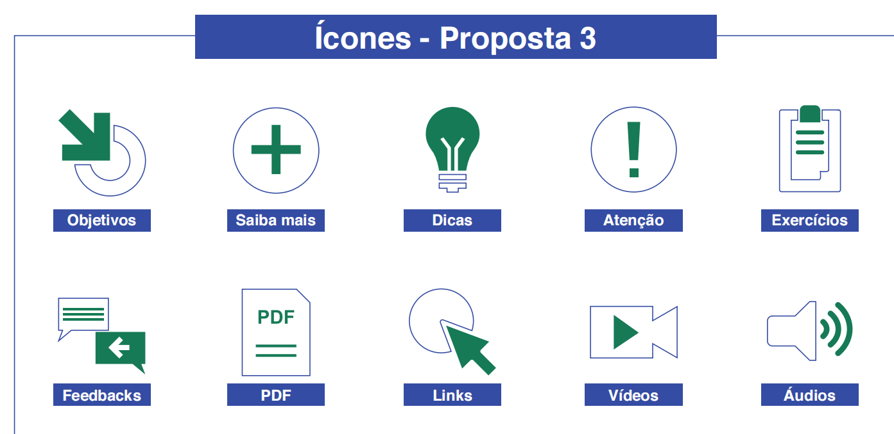

<div style="padding: 10px;">
    <div style="display: flex;justify-content: space-between;align-items: center;">
        <div>
            <h1 style="font-size: 24px;width: 550px;">Processos de criação e suas aplicações</h1>
        </div>
        <div style="width: 290px;height: 20px;background-color: #ffc000;margin-right: -70px;"></div>
    </div>
    <div style="text-align: center;display: flex;">
        <div style="display: flex;width: 25%; flex-direction: column; align-items: center;">
             
            <p>Criação logo</p>
        </div>
        <div style="display: flex;width: 74%;flex-direction: column; align-items: center;">
             
            <p>Criação Iconografia</p>
        </div>
    </div>    
    
</div>